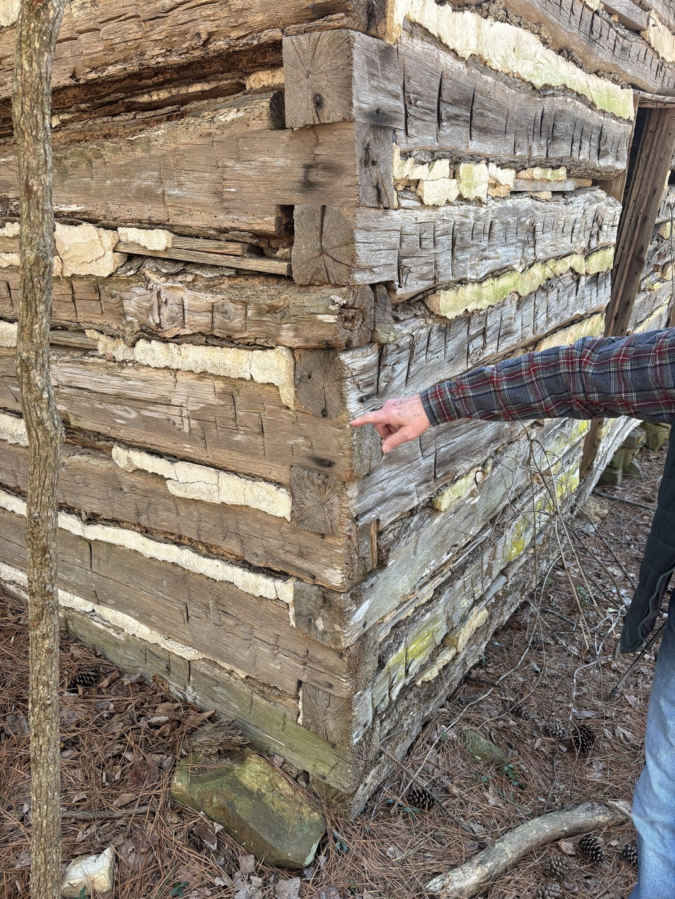
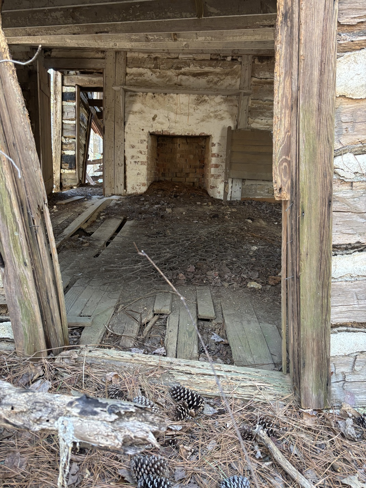
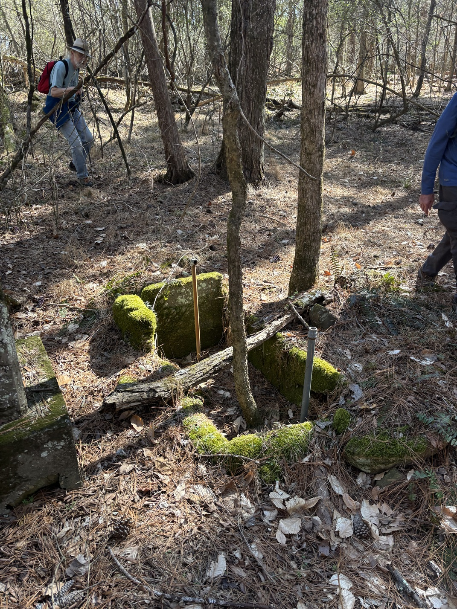

1 March 2025: Peter Sandbeck, Joe Liles, Ken Hermey & I walked under a mile cross country into Eno River State Park.
Ken was leading us back to site of Norman Beasley's grave. Greg Bell & I had been here in July 2024, but it was overgrown.
We had found Norman Beasley's grave in July 2024, but we could not discern any other graves at the time.
Returning in early Spring, we saw much that Greg and I had missed.
An umistakeable headstone has no inscription
Norman Beasley's grave with metal & paper marker
Joe Liles and Ken Hermey share their knowledge of the site

Peter Sandbeck points out the type of notching - circa 1900; definitely not from the Holden era.

The Beasley house has mortared stone at the center of the chimney stack, though most of the chimney is brick. Perhaps there was an earlier building here?

Some sort of fresh water pump station.
This old tobacco barn burned wood to cure the tobacco.